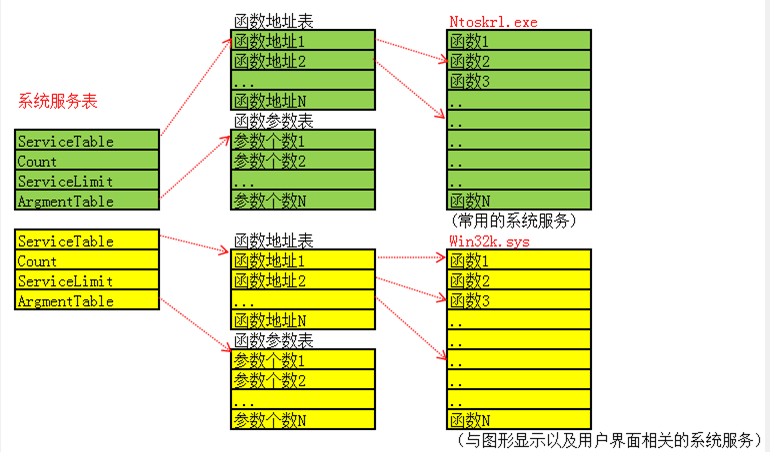
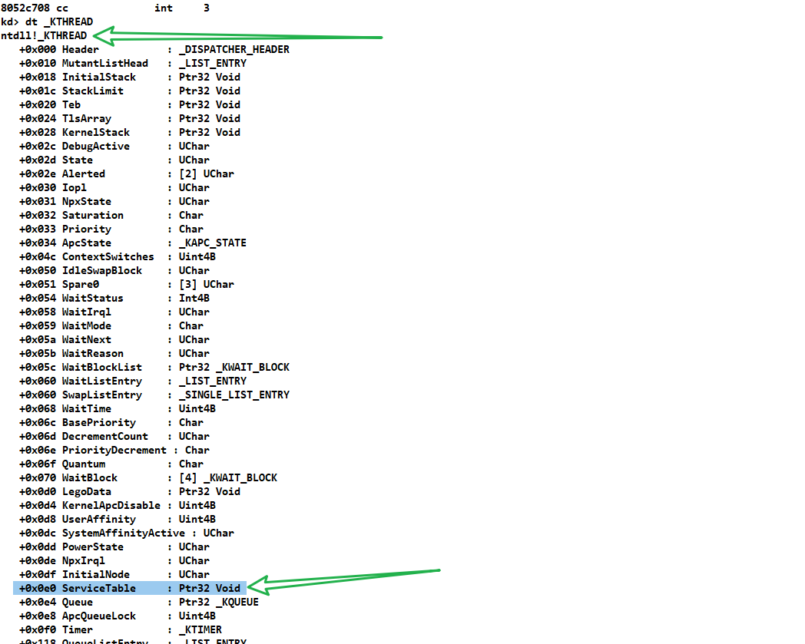
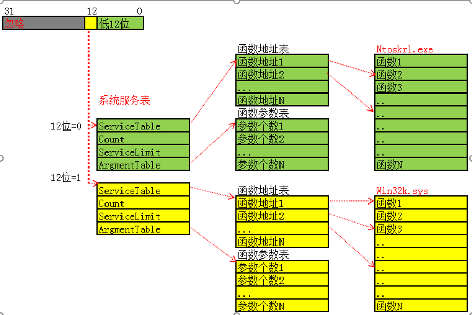
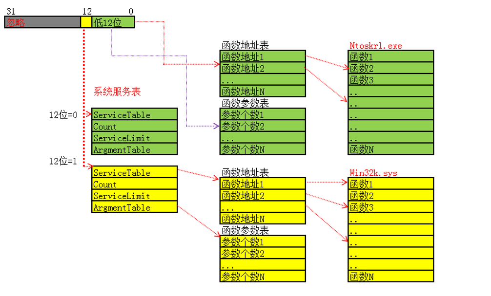
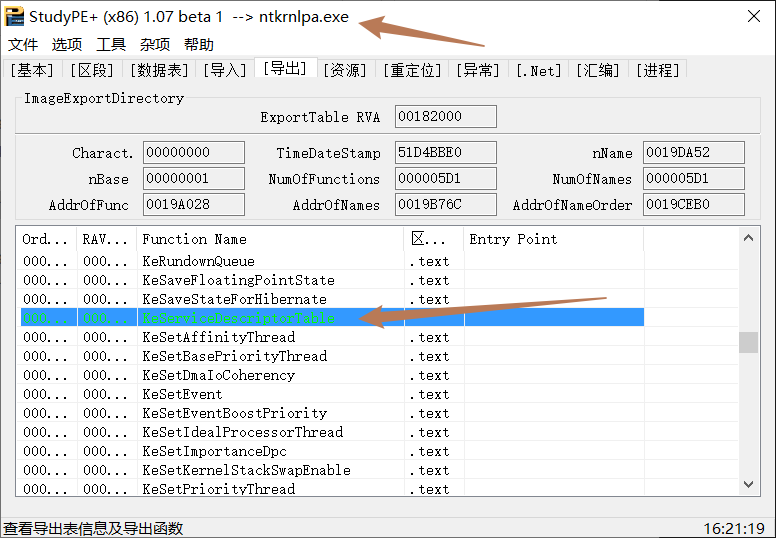

# 楔子
在前两篇的 0/3 环调用分析中，我们知道有两个进入 0 环的方法，一个中断门 利用 int 0x2e 指令，一个是快速调用 利用 sysenter 指令，因为利用中断门进 0 环权限发生切换，会直接向堆栈中压入 5 个值：3 环的 SS、3 环 Eflags、3 环的 CS、3 环的 EIP。而通过快速调用却没有压入这 5 个值，所以会有 KiFastSystemCall 与 KiIntSystemCall 以及 KiSystemService 与 KiFastCallEntry 这四个函数。
KiFastSystemCall 与 KiIntSystemCall 是为了从 3 环进入 0 环，既修改 CS、SS、EIP、ESP。
KiSystemService 与 KiFastCallEntry 它们都是为了填充 KTRAP_FRAME 结构体，从而保存 3 环的环境。
保存并切换完环境后，就开始调用函数了，这里涉及了一张表，系统服务表（SystemServiceTable)
进 0 环后，3 环的各种寄存器的值都会保留到 _Trap_Frame 结构体中，如何根据系统服务号（eax 中存储）找到要执行的内核函数？调用时参数是存储到 3 环的堆栈，如何传递给内核函数？
# 系统服务表
# 结构
首先我们得知道一个结构体，用来描述内核函数信息的表：SystemServiceTable，即系统服务表，它不是 SSDT。

系统服务表由 4 部分组成：ServiceTable 指向的是函数地址数组，每个成员四个字节；Count 表示调用次数；ServiceLimit 表示表中函数的个数；ArgumentTable 指向对应函数有几个参数，每个成员一个字节。
Windows 提供了两张表：上面的表是用来处理一般内核函数的，下面这张表是用来处理与图形相关的内核函数。
这张表里的都是向 3 环开放的内核函数，并不代表整个内核只有这么多函数。
# 系统服务表在哪
SystemServiceTable 系统服务表在哪？ 在 _KTHREAD + 0xE0 的位置

# 判断要调用的函数在哪个表

# 找到要执行的函数与参数个数

用查找到的函数在 ServiceTable 中的索引 i ，去找在 ArgumentTable 中索引为 i 元素，其值就是该函数的 参数个数 * 4。
# SSDT
SSDT 的全称是 System Services Descriptor Table ，意为系统服务描述符表。
SSDT 的每个成员叫做系统服务表
SSDT 的第一个成员是导出的，声明一下即可使用
SSDT 的第二个成员是未导出的，需要通过其它方式查找
在 Windows 中，SSDT 的第三个成员和第四个成员未被使用
在 32 位 XP 中，我们可以通过 ETHREAD 结构体加偏移的方式进行访问。
在内核文件中，有一个变量是导出的： KeServiceDescriptorTable 通过它我们可以访问 SSDT。

在 windbg 中查看一下：
kd> dd KeServiceDescriptorTable | |
8055d700 80505570 00000000 0000011c 805059e4 | |
8055d710 00000000 00000000 00000000 00000000 | |
8055d720 00000000 00000000 00000000 00000000 | |
8055d730 00000000 00000000 00000000 00000000 |
在 WinDbg 中查看未导出成员：
kd> dd KeServiceDescriptorTableShadow | |
8055d6c0 80505570 00000000 0000011c 805059e4 | |
8055d6d0 bf9a6f80 00000000 0000029b bf9a7c90 | |
8055d6e0 00000000 00000000 00000000 00000000 | |
8055d6f0 00000000 00000000 00000000 00000000 |